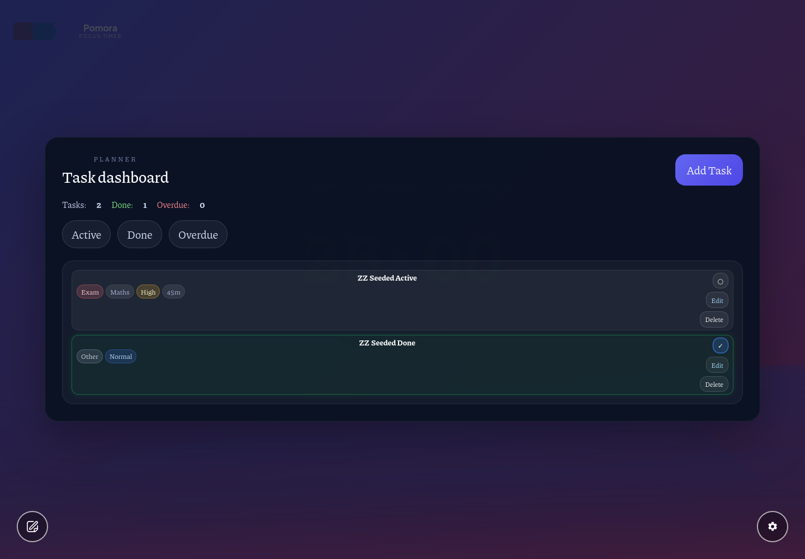
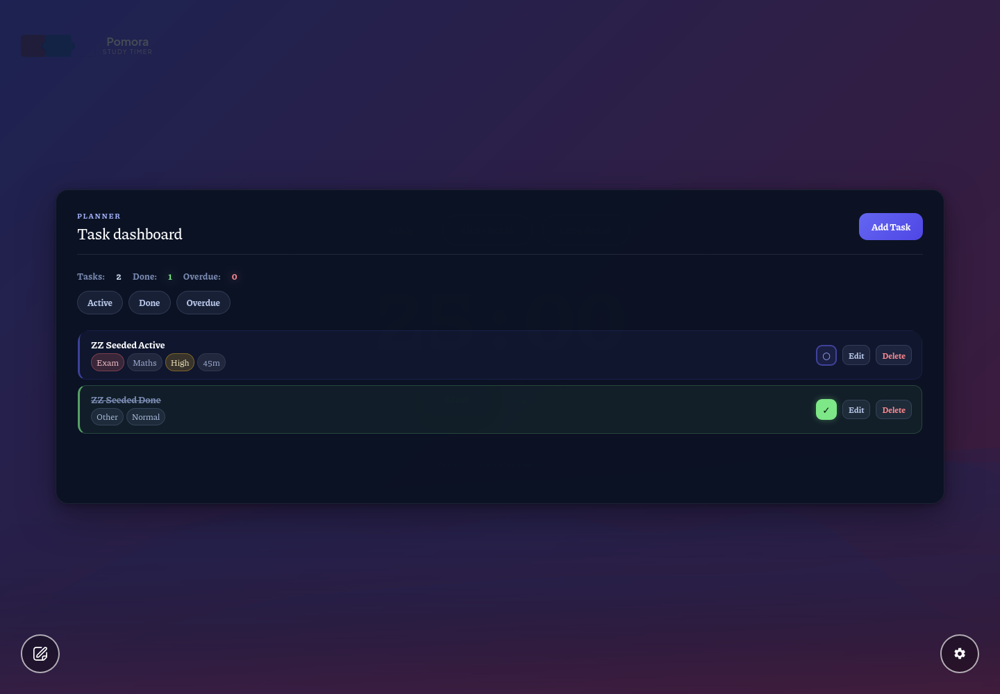
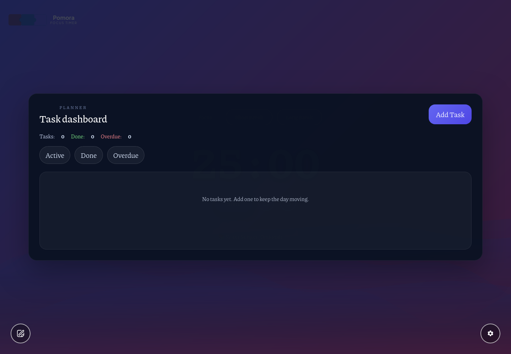
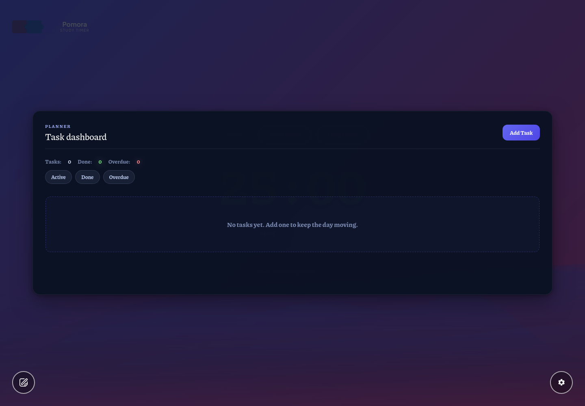
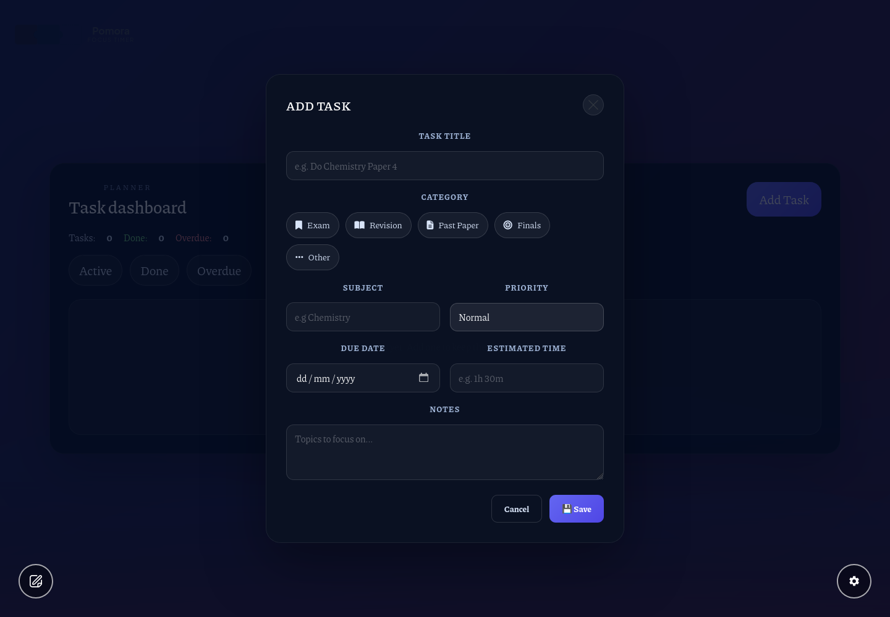
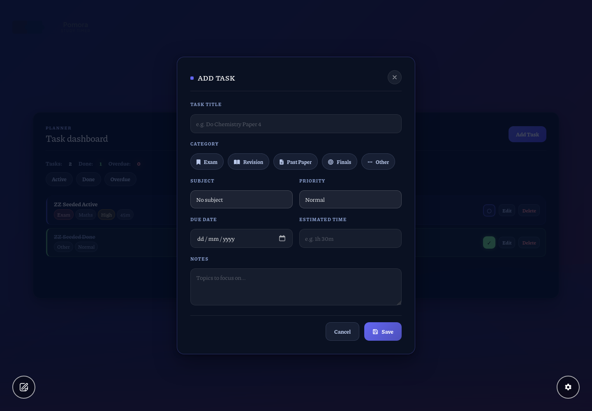
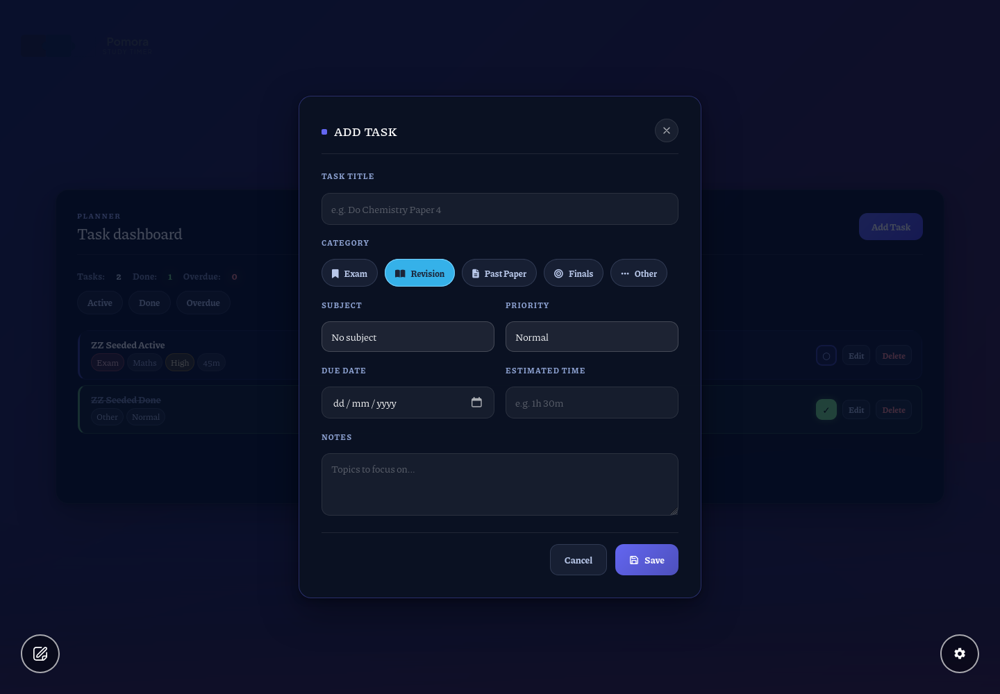
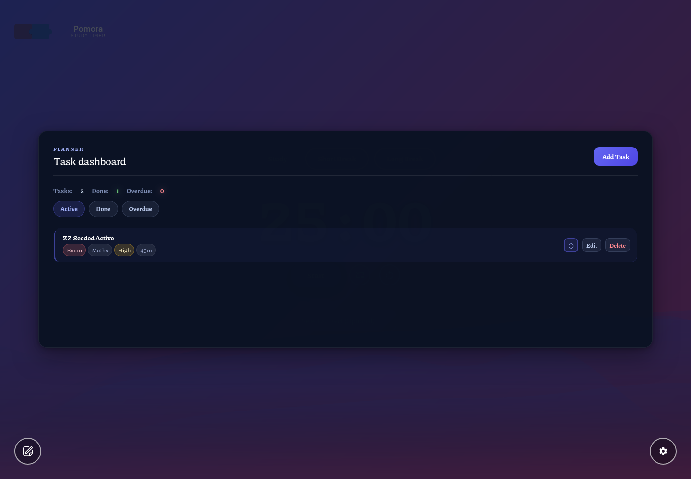

v3 revisions on top of the colorful Refined language: (1) category chips are neutral at rest and only show their hue on hover or when selected; (2) the empty state is enlarged and centered — 56px padding, 1.02rem/600 text, dashed accent frame with a faint accent tint; (3) the whole surface is theme-adaptive — every derived color flows through local --s4-* variables that re-map to the active custom theme's --th-accent / --th-surface-text (verified with a #ff6600 theme in the battery). Rows, summary, filter pill and popup flows are unchanged from v2.


Both sides: same two seeded tasks (Exam/Maths/High active + done Other). Left captured with the Surface-4 overrides stripped (genuine original). Rows: indigo left edge hierarchy, green done / red overdue shells, saturated summary values.


Battery asserts: font-size ≥ 15px (renders 16.3px), text-align center, padding-top 56px. Message keeps the accent-tinted dashed frame so the empty panel reads as an intentional stage, not a blank list.


All five category chips render in the same quiet chrome register (alto text on 12% tint) until hovered or selected; selected chips keep the saturated per-hue fill + glow. Accent-glowing Save, tinted Cancel, alto-blue labels, accent focus rings unchanged.

Clicking a chip: it takes its saturated hue + glow while the other four stay neutral — the v3 answer to "color only when selected or hovered".

Single detail shot: the Active pill in its accent-soft state (#a5b4fc text on indigo 16%), rows narrowed to active tasks.